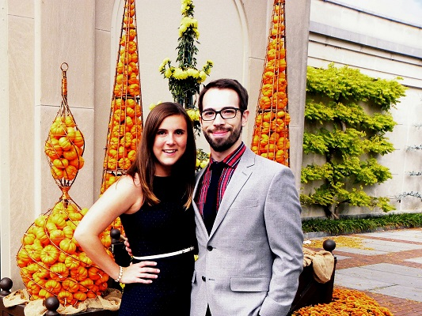

David and Mandy met at work. Late night coding sessions + a healthy dose of GChat led to occassional greetings in the hall. They drove together during a weekend ski trip with some of their colleagues: a ten hour winding trip through the mountains. They were either going to kill each other, or fall for each other. Fortunately the latter occurred. Their first date was a middle school-esque hang out at the Tysons Corner mall.

Mandy is a 23 year old software consultant. She makes a mean cocktail, has a degree in bioengineering, and can talk to pretty much anyone about anything. David is also a software consultant. He is 26, has a master's degree in public policy, and is proud of his Texas roots. You can find him on Saturdays rooting for Baylor football.
